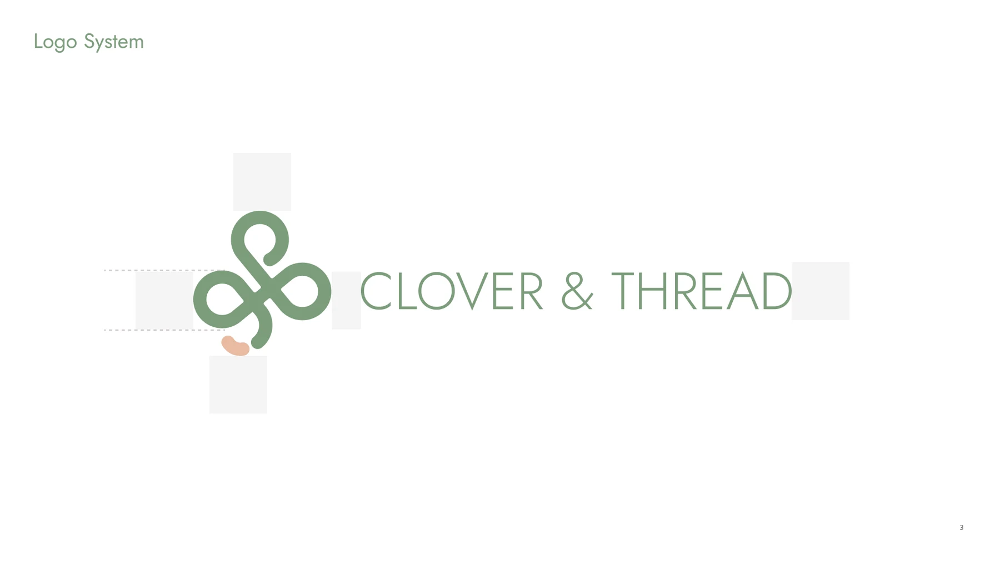

Clover & Thread — Style, Without the Guilt Trip
A brand refresh and e-commerce redesign for a sustainable womenswear label — rebuilt around real analytics, not just a new coat of paint.

The Problem
Clover & Thread's site was losing customers before they ever reached checkout. A 63% bounce rate, 81% cart abandonment, and a 1.3% conversion rate pointed to the same root cause: a brand and a website that no longer matched the modern, minimal, ethical-fashion identity the company had grown into.
The Approach
Started with brand strategy before touching a single screen: a brand definition document, a clear positioning statement, and a visual direction of earth tones and warm neutrals — aligned against aspirational peers like Everlane, Reformation, and Cuyana. Every UX decision followed from there.
The Solution
A refreshed logo system, a mobile-first redesign (72% of traffic was already mobile), simplified product discovery, and a streamlined checkout — built to raise conversion above 4% and cut cart abandonment below 40%.
Starting From the Data
The redesign brief began with an honest look at what wasn't working.
Brand Refresh
A clover-and-ampersand mark built to feel grounded, chic, and effortless — the brand's own words for itself.
Positioning & Voice
"For conscious women who crave clean, curated fashion, Clover & Thread is the stylish, ethical brand that makes getting dressed feel effortless — without compromising values."

Deliverables
A four-phase engagement spanning brand strategy through front-end redesign.
- Brand Definition Document — purpose, values, voice, and positioning
- Refreshed logo system with primary, alternate, and icon-only lockups
- UX research, customer journey maps, and competitive audit
- Mobile-first wireframes and redesigned homepage, product grid, and checkout
- Success benchmarks: conversion >4%, cart abandonment <40%, mobile load <3s

Is your brand losing customers before checkout?
Let's find out why — and fix it with a design that matches who you actually are.